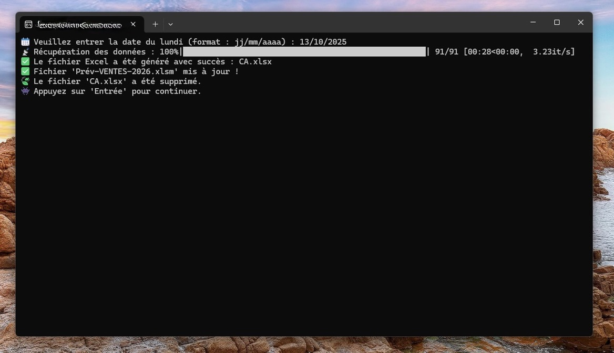

Le but de ce projet était de concevoir un programme Python permettant de remplir automatiquement le CA journalier de chaque boutique via une API, autrefois fait à la main. Cela a permis de gagner du temps et de réduire le risque d'erreurs.